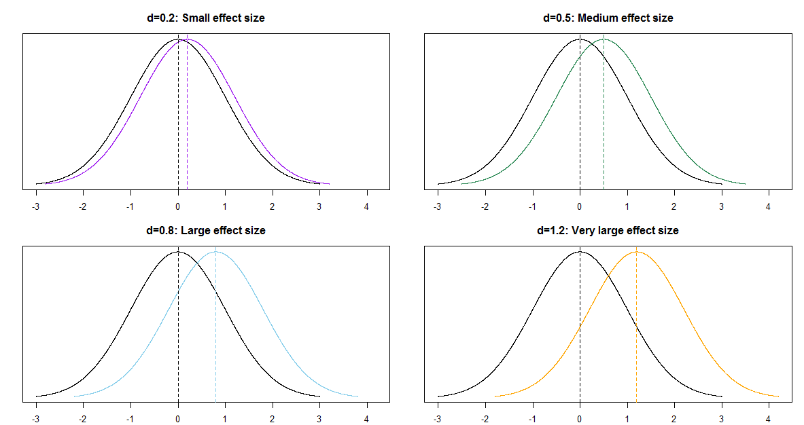
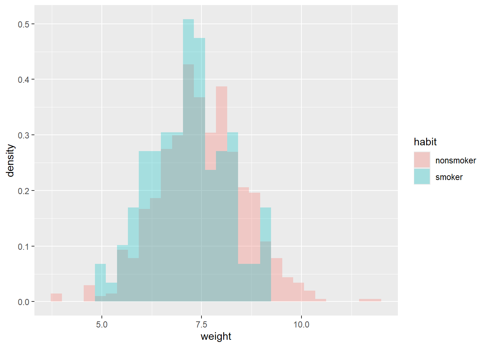
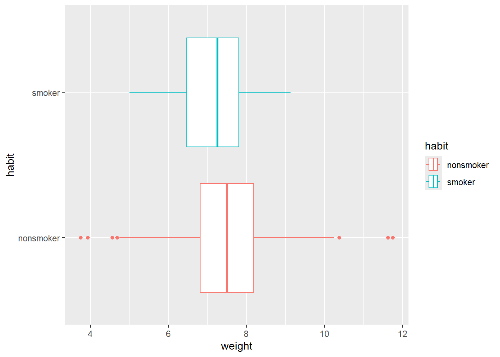
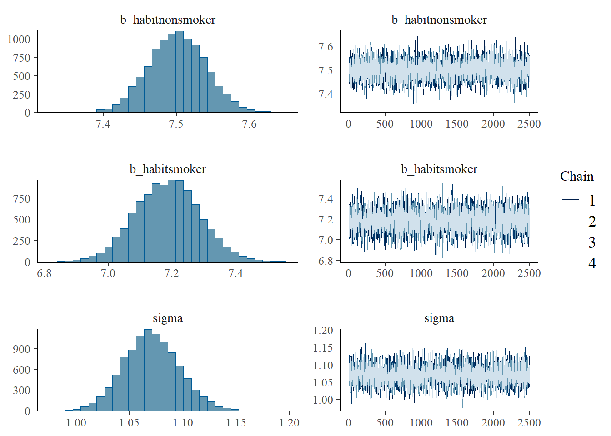
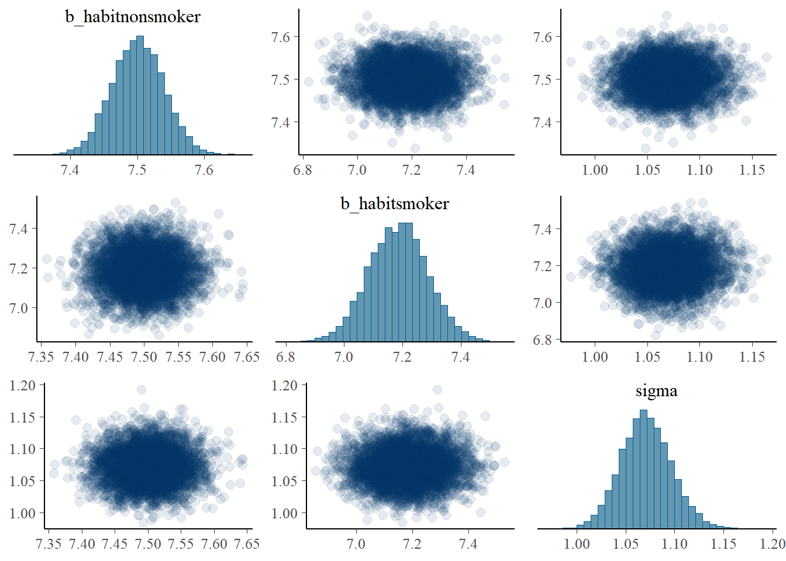
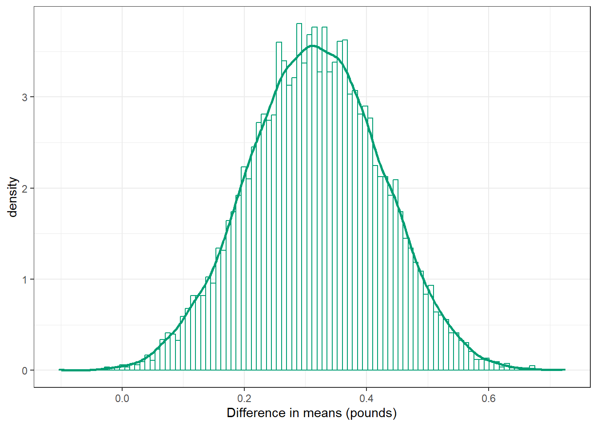
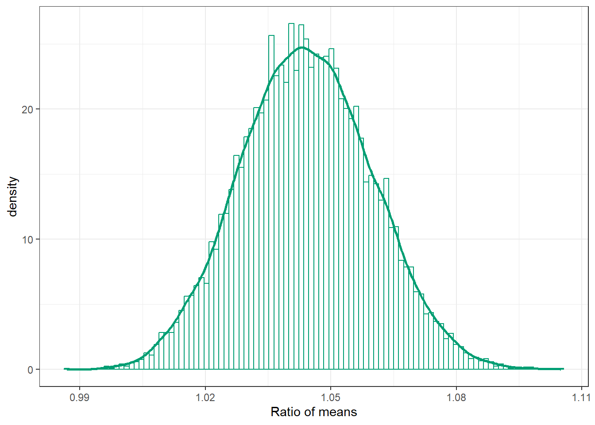
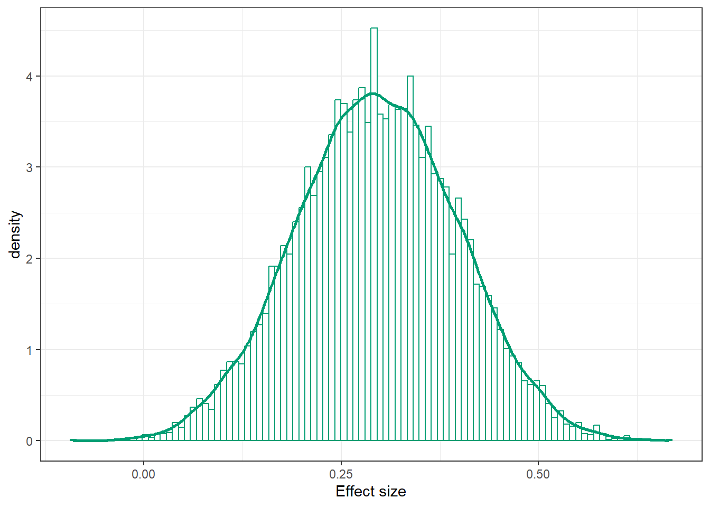

20 Comparing Two Means
- Most interesting statistical problems involve multiple measured variables. For example, many problems involve comparing two (or more) populations or groups based on two (or more) samples.
- In such situations, each population or group will have its own parameters, and there will often be dependence between parameters. We are often interested in difference or ratios of parameters between groups.
Example 20.1 Do newborns born to mothers who smoke tend to weigh less at birth than newborns from mothers who don’t smoke? We’ll investigate this question using birthweight (pounds) data on a sample of full term births in North Carolina over a one year period.
Assume birthweights follow a conditional Normal distribution with mean \(\mu_1\) for nonsmokers and mean \(\mu_2\) for smokers, and standard deviation \(\sigma\).
Note: our primary goal will be to compare the means \(\mu_1\) and \(\mu_2\). We’re assuming a common standard deviation \(\sigma\) to simplify a little, but we could (and probably should) also let standard deviation vary by smoking status. (We could also assume something other than conditional Normal, but again, we’re simplifying.)
Suggest a prior distribution.
The prior distribution will be a joint distribution on \((\mu_1, \mu_2, \sigma)\) triples. We could assume a prior under which \(\mu_1\) and \(\mu_2\) are independent. But why might we want to assume some prior dependence between \(\mu_1\) and \(\mu_2\)? (For some motivation it might help to consider what the frequentist null hypothesis would be.)
Regardless of your answers to the previous parts, assume for the prior: \(\mu_1, \mu_2, \sigma\) are independent; each of \(\mu_1, \mu_2\) has a Normal(7.5, 0.5) distribution; \(\sigma\) has a Half-Normal(0, 1) distribution. How do you interpret the parameter \(\mu_1 - \mu_2\)? Plot the prior distribution of \(\mu_1-\mu_2\), and find prior central 50%, 80%, and 98% credible intervals. Also compute the prior probability that \(\mu_1-\mu_2>0\).
Briefly describe the sample data, summarized in Section 20.1.2.
Is it reasonable to assume that the two samples are independent? (In this case the \(y_1\) and \(y_2\) samples would be conditionally independent given \((\mu_1, \mu_2, \sigma)\).)
Describe how you would compute the likelihood. For concreteness, how you would you compute the likelihood if there were only 4 babies in the sample: 2 non-smokers with birthweights of 8 pounds and 7 pounds, and 2 smokers with birthweights of 8.3 pounds and 7.1 pounds.
Use
brmsto approximate the posterior distribution. Are \(\mu_1\) and \(\mu_2\) independent according the posterior? Why do you think that is?
Plot the posterior distribution of \(\mu_1-\mu_2\) and describe it. Compute and interpret posterior central 50%, 80%, and 98% credible intervals. Also compute and interpret the posterior probability that \(\mu_1-\mu_2>0\).
If we’re interested in \(\mu_1-\mu_2\), why didn’t we put a prior directly on \(\mu_1-\mu_2\) rather than on \((\mu_1,\mu_2)\)?
Plot the posterior distribution of \(\mu_1/\mu_2\), describe it, and find and interpret posterior central 50%, 80%, and 98% credible intervals.
Is there some evidence that babies whose mothers smoke tend to weigh less than those whose mothers don’t smoke?
Can we say that smoking is the cause of the difference in mean weights?
Is there some evidence that babies whose mothers smoke tend to weigh much less than those whose mothers don’t smoke? Explain.
One quantity of interest is the effect size, which is a way of measuring the magnitude of the difference between groups. When comparing two means, a simple measure of effect size (Cohen’s \(d\)) is \[ \frac{\mu_1 - \mu_2}{\sigma} \] Plot the posterior distribution of this effect size and describe it. Compute and interpret posterior central 50%, 80%, and 98% credible intervals.
Independence in the data versus in the prior/posterior
It is typical to assume independence in the data, e.g., independence of values of the measured variables within and between samples (conditional on the parameters). Whether independence in the data is a reasonable assumption depends on how the data is collected.
But whether it is reasonable to assume prior independence of parameters is a completely separate question and is dependent upon our subjective beliefs about any relationships between parameters.
Transformations of parameters
The primary output of a Bayesian data analysis is the full joint posterior distribution on all parameters. Given the joint distribution, the distribution of transformations of the primary parameters is readily obtained.
Effect size for comparing means
When comparing groups, a more important question than “is there a difference?” is “how large is the difference?” An effect size is a measure of the magnitude of a difference between groups. A difference in parameters can be used to measure the absolute size of the difference in the measurement units of the variable, but effect size can also be measured as a relative difference.
When comparing a numerical variable between two groups, one measure of the population effect size is Cohens’s \(d\) \[ \frac{\mu_1 - \mu_2}{\sigma} \]
The values of any numerical variable vary naturally from unit to unit. The SD of the numerical variable measures the degree to which individual values of the variable vary naturally, so the SD provides a natural “scale” for the variable. Cohen’s \(d\) compares the magnitude of the difference in means relative to the natural scale (SD) for the variable.
Some rough guidelines for interpreting \(|d|\):
| d | 0.2 | 0.5 | 0.8 | 1.2 | 2.0 |
| Effect size | Small | Medium | Large | Very Large | Huge |
For example, assume the two population distributions are Normal and the two population standard deviations are equal. Then when the effect size is 1.0 the median of the distribution with the higher mean is the 84th percentile of the distribution with the lower mean, which is a very large difference.
| d | 0.2 | 0.5 | 0.8 | 1.0 | 1.2 | 2.0 |
| Effect size | Small | Medium | Large | Very Large | Huge | |
| Median of population 1 is | ||||||
| (blank) percentile of population 2 | 58th | 69th | 79th | 84th | 89th | 98th |
20.1 Notes
20.1.1 Prior distribution of \(\mu_1-\mu_2\)
The prior distribution of \(\mu_1-\mu_2\) is Normal with mean 7.5-7.5 = 0 and standard deviation \(\sqrt{0.5^2 + 0.5^2} = 0.707\)
qnorm(c(0.01, 0.10, 0.25, 0.75, 0.90, 0.99),
mean = 7.5 - 7.5,
sd = sqrt(0.5 ^ 2 + 0.5 ^ 2))[1] -1.6449764 -0.9061938 -0.4769363 0.4769363 0.9061938 1.644976420.1.2 Sample data
data = read_csv("baby_smoke.csv")Rows: 999 Columns: 13
── Column specification ────────────────────────────────────────────────────────
Delimiter: ","
chr (7): mature, premie, marital, lowbirthweight, gender, habit, whitemom
dbl (6): fage, mage, weeks, visits, gained, weight
ℹ Use `spec()` to retrieve the full column specification for this data.
ℹ Specify the column types or set `show_col_types = FALSE` to quiet this message.head(data)# A tibble: 6 × 13
fage mage mature weeks premie visits marital gained weight lowbirthweight
<dbl> <dbl> <chr> <dbl> <chr> <dbl> <chr> <dbl> <dbl> <chr>
1 NA 13 younger … 39 full … 10 married 38 7.63 not low
2 NA 14 younger … 42 full … 15 married 20 7.88 not low
3 19 15 younger … 37 full … 11 married 38 6.63 not low
4 21 15 younger … 41 full … 6 married 34 8 not low
5 NA 15 younger … 39 full … 9 married 27 6.38 not low
6 NA 15 younger … 38 full … 19 married 22 5.38 low
# ℹ 3 more variables: gender <chr>, habit <chr>, whitemom <chr>We’ll only include full term babies in the analysis. The variables of interest are weight and habit.
data = data |>
filter(premie == "full term")data |>
group_by(habit) |>
summarize(n(), mean(weight), sd(weight)) |>
kbl(digits = 2) |>
kable_styling()| habit | n() | mean(weight) | sd(weight) |
|---|---|---|---|
| nonsmoker | 739 | 7.50 | 1.08 |
| smoker | 107 | 7.17 | 0.97 |
ggplot(data,
aes(x = weight,
fill = habit)) +
geom_histogram(alpha = 0.3,
aes(y = after_stat(density)),
position = 'identity')`stat_bin()` using `bins = 30`. Pick better value `binwidth`.ggplot(data,
aes(x = weight,
y = habit,
col = habit)) +
geom_boxplot()

20.1.3 Posterior distribution
library(brms)Loading required package: RcppLoading 'brms' package (version 2.23.0). Useful instructions
can be found by typing help('brms'). A more detailed introduction
to the package is available through vignette('brms_overview').
Attaching package: 'brms'The following objects are masked from 'package:tidybayes':
dstudent_t, pstudent_t, qstudent_t, rstudent_tThe following object is masked from 'package:stats':
arlibrary(tidybayes)
library(bayesplot)This is bayesplot version 1.14.0- Online documentation and vignettes at mc-stan.org/bayesplot- bayesplot theme set to bayesplot::theme_default() * Does _not_ affect other ggplot2 plots * See ?bayesplot_theme_set for details on theme setting
Attaching package: 'bayesplot'The following object is masked from 'package:brms':
rhatWe want a posterior for \(\mu_1\) and \(\mu_2\), so we set the intercept to 0 in the linear model. We can use get_prior with out model specifications to see what the parameters will be.
get_prior(data = data,
family = gaussian(),
weight ~ 0 + habit) prior class coef group resp dpar nlpar lb ub tag
(flat) b
(flat) b habitnonsmoker
(flat) b habitsmoker
student_t(3, 0, 2.5) sigma 0
source
default
(vectorized)
(vectorized)
defaultNow we fit the model. The normal(7.5, 0.5) prior for \(\mu_1\) and \(\mu_2\) will be vectorized.
fit <- brm(data = data,
family = gaussian(),
weight ~ 0 + habit,
prior = c(prior(normal(7.5, 0.5), class = b),
prior(normal(0, 1), class = sigma)),
iter = 3500,
warmup = 1000,
chains = 4,
refresh = 0)Compiling Stan program...Start samplingprior_summary(fit) prior class coef group resp dpar nlpar lb ub tag
normal(7.5, 0.5) b
normal(7.5, 0.5) b habitnonsmoker
normal(7.5, 0.5) b habitsmoker
normal(0, 1) sigma 0
source
user
(vectorized)
(vectorized)
usersummary(fit) Family: gaussian
Links: mu = identity
Formula: weight ~ 0 + habit
Data: data (Number of observations: 846)
Draws: 4 chains, each with iter = 3500; warmup = 1000; thin = 1;
total post-warmup draws = 10000
Regression Coefficients:
Estimate Est.Error l-95% CI u-95% CI Rhat Bulk_ESS Tail_ESS
habitnonsmoker 7.50 0.04 7.43 7.58 1.00 9993 7584
habitsmoker 7.19 0.10 6.99 7.38 1.00 8723 6750
Further Distributional Parameters:
Estimate Est.Error l-95% CI u-95% CI Rhat Bulk_ESS Tail_ESS
sigma 1.07 0.03 1.02 1.12 1.00 10160 7338
Draws were sampled using sampling(NUTS). For each parameter, Bulk_ESS
and Tail_ESS are effective sample size measures, and Rhat is the potential
scale reduction factor on split chains (at convergence, Rhat = 1).plot(fit)
pairs(fit,
off_diag_args = list(alpha = 0.1))
posterior = fit |>
spread_draws(b_habitsmoker, b_habitnonsmoker, sigma) |>
rename(mu1 = b_habitnonsmoker, mu2 = b_habitsmoker)
posterior |> head() |> kbl(digits = 2) |> kable_styling()| .chain | .iteration | .draw | mu2 | mu1 | sigma |
|---|---|---|---|---|---|
| 1 | 1 | 1 | 7.34 | 7.49 | 1.09 |
| 1 | 2 | 2 | 7.27 | 7.50 | 1.04 |
| 1 | 3 | 3 | 7.24 | 7.51 | 1.06 |
| 1 | 4 | 4 | 7.23 | 7.50 | 1.05 |
| 1 | 5 | 5 | 7.32 | 7.44 | 1.09 |
| 1 | 6 | 6 | 7.08 | 7.52 | 1.09 |
20.1.4 Posterior distribution of difference in means
posterior = posterior |>
mutate(mu_diff = mu1 - mu2)
posterior |> head() |> kbl(digits = 2) |> kable_styling()| .chain | .iteration | .draw | mu2 | mu1 | sigma | mu_diff |
|---|---|---|---|---|---|---|
| 1 | 1 | 1 | 7.34 | 7.49 | 1.09 | 0.15 |
| 1 | 2 | 2 | 7.27 | 7.50 | 1.04 | 0.23 |
| 1 | 3 | 3 | 7.24 | 7.51 | 1.06 | 0.27 |
| 1 | 4 | 4 | 7.23 | 7.50 | 1.05 | 0.27 |
| 1 | 5 | 5 | 7.32 | 7.44 | 1.09 | 0.13 |
| 1 | 6 | 6 | 7.08 | 7.52 | 1.09 | 0.45 |
ggplot(posterior,
aes(x = mu_diff)) +
geom_histogram(aes(y = after_stat(density)),
col = bayes_col["posterior"], fill = "white", bins = 100) +
geom_density(linewidth = 1, col = bayes_col["posterior"]) +
labs(x = "Difference in means (pounds)") +
theme_bw()
mean(posterior$mu_diff)[1] 0.315822sd(posterior$mu_diff)[1] 0.1082119quantile(posterior$mu_diff,
c(0.01, 0.10, 0.25, 0.5, 0.75, 0.90, 0.99)) 1% 10% 25% 50% 75% 90% 99%
0.06890393 0.17628197 0.24189140 0.31563945 0.39102622 0.45509328 0.56207534 sum(posterior$mu_diff > 0) / length(posterior$mu_diff)[1] 0.998920.1.5 Posterior distribution of ratio of means
posterior = posterior |>
mutate(mu_ratio = mu1 / mu2)
posterior |> head() |> kbl(digits = 2) |> kable_styling()| .chain | .iteration | .draw | mu2 | mu1 | sigma | mu_diff | mu_ratio |
|---|---|---|---|---|---|---|---|
| 1 | 1 | 1 | 7.34 | 7.49 | 1.09 | 0.15 | 1.02 |
| 1 | 2 | 2 | 7.27 | 7.50 | 1.04 | 0.23 | 1.03 |
| 1 | 3 | 3 | 7.24 | 7.51 | 1.06 | 0.27 | 1.04 |
| 1 | 4 | 4 | 7.23 | 7.50 | 1.05 | 0.27 | 1.04 |
| 1 | 5 | 5 | 7.32 | 7.44 | 1.09 | 0.13 | 1.02 |
| 1 | 6 | 6 | 7.08 | 7.52 | 1.09 | 0.45 | 1.06 |
ggplot(posterior,
aes(x = mu_ratio)) +
geom_histogram(aes(y = after_stat(density)),
col = bayes_col["posterior"], fill = "white", bins = 100) +
geom_density(linewidth = 1, col = bayes_col["posterior"]) +
labs(x = "Ratio of means") +
theme_bw()
mean(posterior$mu_ratio)[1] 1.044161sd(posterior$mu_ratio)[1] 0.01564791quantile(posterior$mu_ratio,
c(0.01, 0.10, 0.25, 0.5, 0.75, 0.90, 0.99)) 1% 10% 25% 50% 75% 90% 99%
1.009344 1.024155 1.033327 1.043923 1.054902 1.064448 1.080669 20.1.6 Posterior distribution of effect size
posterior = posterior |>
mutate(effect_size = (mu1 - mu2) / sigma)
posterior |> head() |> kbl(digits = 2) |> kable_styling()| .chain | .iteration | .draw | mu2 | mu1 | sigma | mu_diff | mu_ratio | effect_size |
|---|---|---|---|---|---|---|---|---|
| 1 | 1 | 1 | 7.34 | 7.49 | 1.09 | 0.15 | 1.02 | 0.13 |
| 1 | 2 | 2 | 7.27 | 7.50 | 1.04 | 0.23 | 1.03 | 0.22 |
| 1 | 3 | 3 | 7.24 | 7.51 | 1.06 | 0.27 | 1.04 | 0.25 |
| 1 | 4 | 4 | 7.23 | 7.50 | 1.05 | 0.27 | 1.04 | 0.26 |
| 1 | 5 | 5 | 7.32 | 7.44 | 1.09 | 0.13 | 1.02 | 0.11 |
| 1 | 6 | 6 | 7.08 | 7.52 | 1.09 | 0.45 | 1.06 | 0.41 |
ggplot(posterior,
aes(x = effect_size)) +
geom_histogram(aes(y = after_stat(density)),
col = bayes_col["posterior"], fill = "white", bins = 100) +
geom_density(linewidth = 1, col = bayes_col["posterior"]) +
labs(x = "Effect size") +
theme_bw()
mean(posterior$effect_size)[1] 0.2952176sd(posterior$effect_size)[1] 0.1015268quantile(posterior$effect_size,
c(0.01, 0.10, 0.25, 0.5, 0.75, 0.90, 0.99)) 1% 10% 25% 50% 75% 90% 99%
0.06374755 0.16458943 0.22577629 0.29451560 0.36465077 0.42560646 0.52678586